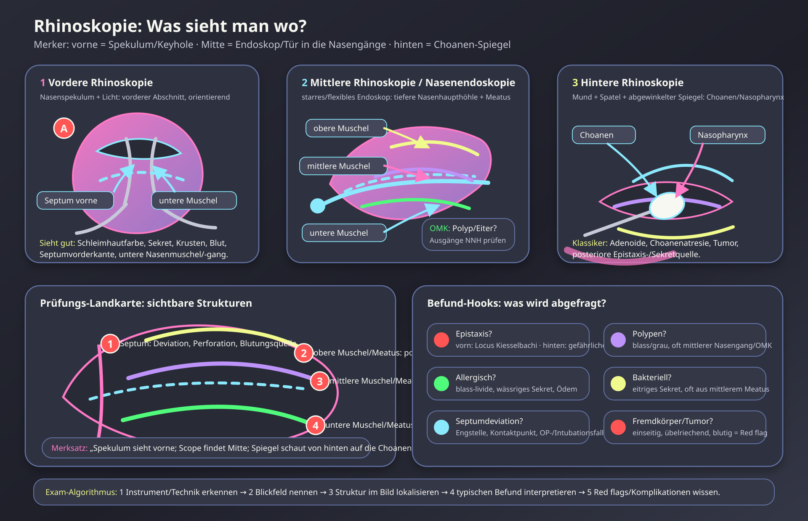

Haupt-Merksatz
„Spekulum sieht vorne; Scope findet Mitte; Spiegel schaut von hinten auf die Choanen.“
- Spekulum = vordere Rhinoskopie [Rhinoscopia anterior]: vorderer Nasenraum, Septumvorderkante, untere Muschel/unterer Nasengang, Schleimhaut/Sekret.
- Scope = mittlere Rhinoskopie/Nasenendoskopie: tiefere Nasenhaupthöhle, mittlerer Nasengang, ostiomeataler Komplex, Polypen/Eiter/Septumdeviation/Tumor.
- Spiegel = hintere Rhinoskopie/Postrhinoskopie: über Mundhöhle zum Nasopharynx, Choanen und posteriore Nasenabschnitte.
Schema: Techniken + sichtbare Strukturen + Befund-Hooks
Selbst gezeichnetes Dracula-Schema: links vordere Rhinoskopie, mittig Endoskopie/mittlere Rhinoskopie, rechts hintere Rhinoskopie. Unten: Prüfungs-Landkarte der lateralen Nasenwand und Befund-Hooks.

Wahrheitslayer: Einteilung und Blickfeld
| Form | Instrument/Zugang | Was sieht man? | Prüfungsnutzen |
|---|---|---|---|
| Vordere Rhinoskopie [Rhinoscopia anterior] | Nasenspekulum + Licht über vordere Nasenöffnung | vorderer Nasenraum, Septumvorderkante, Schleimhautfarbe/-schwellung, Sekret/Krusten, untere Nasenmuschel und unterer Nasengang orientierend | Schneller Basisbefund: Rhinitis, Epistaxis anterior, Septumdeviation vorne, Fremdkörper nahe Eingang. |
| Mittlere Rhinoskopie / Nasenendoskopie | starres oder flexibles Nasenendoskop, meist nach Abschwellung + Oberflächenanästhesie | tiefere Nasenhaupthöhle, mittlere Muschel, mittlerer Nasengang, ostiomeataler Komplex, tiefe Septumabschnitte, Nasopharynx je nach Technik | Wichtig für Polypen, eitriges Sekret aus mittlerem Meatus, chronische Rhinosinusitis, Tumoren, prä-/postoperative Kontrolle. |
| Hintere Rhinoskopie [Postrhinoskopie] | Zungenspatel + abgewinkelter Spiegel über Mundhöhle | Choanen, posteriorer Nasenraum, Nasopharynx/Rachenmandelregion | Adenoide, Choanenatresie, posteriore Blutungs-/Sekretquelle, Nasopharynx-Raumforderung. |
Wahrheitslayer: typische Befunde und was sie bedeuten
| Befund im Bild | Typische Beschreibung | High-Yield Deutung | Red flag / Falle |
|---|---|---|---|
| Allergische Rhinitis | blasse/livide, ödematöse Schleimhaut; wässriges Sekret | IgE/Histamin; oft Niesen, Juckreiz, Konjunktivitis. | Nicht mit bakterieller eitriger Sinusitis verwechseln. |
| Akute infektiöse Rhinitis/Sinusitis | gerötete, geschwollene Schleimhaut; mukopurulentes Sekret | Eiter aus mittlerem Nasengang spricht für vordere NNH-Gruppe/ostiomeatalen Komplex. | Orbita-/intrakranielle Komplikation bei starken Schmerzen, Fieber, Augenbefund. |
| Nasenpolypen | blass-graue, glasige, oft gestielte Raumforderungen | Chronische Rhinosinusitis, ASS-Intoleranz/AERD, Asthma-Assoziation; häufig im mittleren Nasengang/OMK. | Einseitige „Polyp“-Masse oder Blutung → Tumor/Fremdkörper mitdenken. |
| Septumdeviation/-perforation | asymmetrisches Septum, Engstelle, Loch/Krusten | Obstruktion, Kontaktpunkte, Epistaxis/Krusten möglich. | Perforation: Trauma/OP, Kokain, Granulomatose mit Polyangiitis u.a. differenzialdiagnostisch. |
| Epistaxis | Blut, Krusten, sichtbare Gefäßstelle | Anterior meist Locus Kiesselbachi; häufig und leichter tamponierbar. | Posterior = stärker/gefährlicher, ältere/antikoagulierte Patienten, Blut läuft in Rachen. |
| Einseitig übelriechendes Sekret | oft bei Kind: fötider Ausfluss | Fremdkörper bis zum Beweis des Gegenteils. | Bei Erwachsenen einseitig blutig/foetid → Tumor ausschließen. |
Die nützlichsten oft geprüften Diagramme/Schemata
- Instrumentenbild: Nasenspekulum = anterior; Endoskop = mittlere/tiefe Nasenhöhle; Spiegel über Mund = posterior/Choanen.
- Lateralwand-Schema: obere, mittlere, untere Nasenmuschel + Meatus. Rhinoskopie-Fragen koppeln das gern an Nasennebenhöhlen-Drainage.
- Ostiomeataler Komplex: Schlüsselregion im mittleren Nasengang; Polyp/Eiter/Schwellung hier erklärt Sinusitis der vorderen Gruppe.
- Epistaxis-Schema: anteriorer Locus Kiesselbachi vs. posteriore Blutung. Rhinoskopie lokalisiert Blutungsquelle.
- Nasopharynx/Choanen-Schema: hintere Rhinoskopie/endoskopisch wichtig für Adenoide, Choanenatresie, Tumoren.
- Red-flag-Schema: einseitige Obstruktion + Blutung + Schmerz/Neurologie = nicht einfach „Rhinitis“.
Mini-Algorithmus für MC-/OSCE-Fragen
| Schritt | Frage | Antwortanker |
|---|---|---|
| 1 | Welches Instrument? | Spekulum = vorn; Endoskop = tief/mittig; Spiegel = hinten. |
| 2 | Welche Struktur? | Septum, Concha inferior/media/superior, Meatus, Choane, Nasopharynx. |
| 3 | Welche Befundqualität? | Farbe, Schwellung, Sekret, Blut, Polyp/Masse, Kruste, Fremdkörper. |
| 4 | Welche Diagnose/Falle? | Allergie vs. Infektion; anterior vs. posterior Epistaxis; Polyp vs. Tumor; OMK-Blockade. |
Mini-Quiz
1. Ein Bild zeigt eitriges Sekret aus dem mittleren Nasengang. Welche Strukturengruppe ist besonders verdächtig?
Vordere NNH-Gruppe/ostiomeataler Komplex: Sinus maxillaris, Sinus frontalis, vordere/mittlere Ethmoidalzellen.
2. Welche Rhinoskopie zeigt klassisch Choanen und Nasopharynx?
Hintere Rhinoskopie/Postrhinoskopie; praktisch heute oft auch endoskopisch beurteilbar.
3. Blasse, glasige Raumforderungen beidseits im mittleren Nasengang: wahrscheinlich?
Nasenpolypen, häufig bei chronischer Rhinosinusitis; ASS-Intoleranz/Asthma-Assoziation als High-Yield-Verknüpfung.
4. Kind mit einseitigem übelriechendem Nasensekret: was muss man suchen?
Nasenfremdkörper.
Quellen / Abgleich
- DocCheck Flexikon: Rhinoskopie — Einteilung in vordere, mittlere und hintere Rhinoskopie; Technik und Blickfeld.
- HNO-Ärzte im Netz: Nasenspiegelung — Untersuchungsformen und auffindbare Befunde.
- Stanford Medicine: Nasal Endoscopy — anterior rhinoscopy as limited keyhole view vs. endoscopic deeper view.
- Medscape: Nasal Endoscopy — indications and endoscopic anatomy/drainage landmarks.
- Interne Verknüpfung: Nasennebenhöhlen-Seite — Drainagewege und ostiomeataler Komplex.
Hinweis: Das SVG ist ein vereinfachtes Lernschema, keine maßstabsgetreue endoskopische Fotografie.